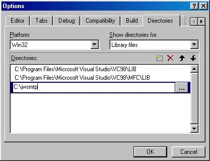
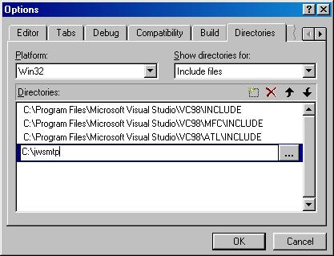
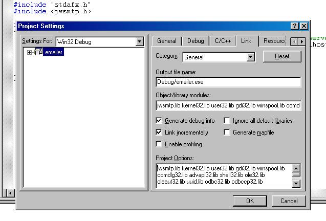

howto use the mailer class in your own programs
First compile the code.
If you have VC++ double click the
mail.dsw file in the jwsmtp directory. Change to the lib target and press F7 to compile.
If you don't, use your development environment to compile the jwsmtp files into a lib.
Copy the jwsmtp.lib file in the build directory and the headers ( jwsmtp.h, mailer.h, compat.h, base64.h in the jwsmtp/jwsmtp directory) into their own directory.
Tell your development environment where the library file is and its headers. e.g. presuming you copied the files into the
C:\jwsmtp directory.


Now you need to tell the linker to link against this library file when
linking. In VC use the project settings dialog to tell the current project the name of the library to use.

Change to the
'Link' tab and add
jwsmtp.lib to the
Object/library modules text box.
The source code file that references the jwsmtp library must have an include line for the libraries header, i.e:
#include <jwsmtp.h>
.... rest of program code
Alternatively you could just put the names of the three object files in this text box (mailer.o, compat.o, base64.o) if you do not wish to use the compiled library.
That's about it, enjoy.
JohnWiggins.net
email: